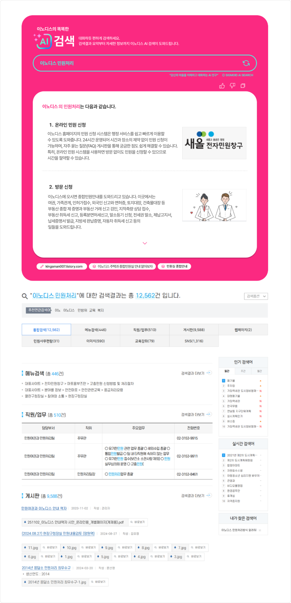

SIGMOID AI Search는 AI기반의 통합 검색 솔루션으로 방대한 데이터 속에서 필요한 정보를 빠르고 정확하게 찾아냅니다.
검색 알고리즘 최적화를 통해 텍스트, 이미지, 동영상 등 다양한 유형의 콘텐츠검색은 물론, 대화형 검색을 통해 사용자와의 자연스러운
인터페이스를 제공합니다. 공공기관 데이터 검색, 학술 자료 탐색, 대규모 콘텐츠 관리 시스템에서 활용할 수 있습니다.
NLP와 NLG를 활용하여 사용자의 질문을 이해하고, 정확한 의도를 파악하며 검색 결과를 사용자가 이해하기 쉽도록 자연스러운 문장으로 요약하여 설명합니다. 이로 인해 단순한 데이터 나열이 아닌 문장형 응답을 제공합니다.
머신 러닝을 활용하여 사용자의 검색기록과 행동 데이터를 학습하고 개인 맞춤형 결과를 제시합니다. 사용자마다 다른 관심사에 맞춤 콘텐츠 검색 결과 응대가 가능합니다.
텍스트는 물론 음성, 이미지, 동영상 입력까지 지원하며 멀티모달 검색 결과를 제공합니다. 예를 들어, 이미지를 업로드하거나 음성으로 질문하면 해당 데이터와 관련된 결과 제공이 가능합니다.
자연스러운 맥락을 유지하는 것 뿐만 아니라, 사용자와의 상호작용을 통해 질문을 구체화 하거나 추가 정보를 요청할 수 있습니다. 예를 들어, "다른 정보는 없나요?" 와 같은 후속 질문에도 유연하게 대응할 수 있습니다.
시간으로 데이터 변화를 감지하고 이를 반영해 최신 결과를 제공합니다. 실시간 색인 (Real-Time Indexing)으로 새로운 데이터가 추가되거나 기존 데이터가 수정될 경우 이를 즉시 감지하여 데이터를 항상 최신 상태로 유지합니다.
사용자의 검색 패턴과 데이터를 기반으로 관심 있을만한 콘텐츠를 예측하여 추천합니다. 기존의 단순한 키워드 기반 검색을 넘어 사용자가 검색할 가능성이 높은 정보를 능동적으로 제안하며 검색 경험을 향상시킵니다.
